Home / Art Gallery
Art Gallery
Discover artists, artworks and the visual arts through postage stamps.

Leonardo da Vinci
An illustrated tribute to the artist.
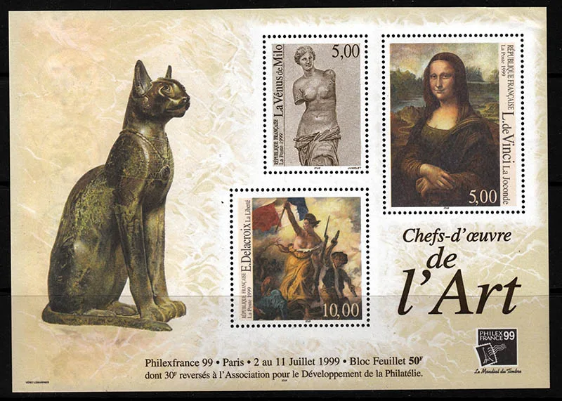
Most Beautiful Art Stamps
Selections from the philatelic art collection.

Johannes Vermeer
Girl with a Pearl Earring on stamps.
Coaches on Stamps
Explore the original illustrated article.
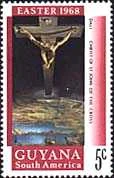
Easter on Stamps
Explore the original illustrated article.
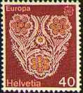
Embroidery on Stamps
Explore the original illustrated article.
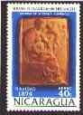
Errors on Art Stamps
Explore the original illustrated article.
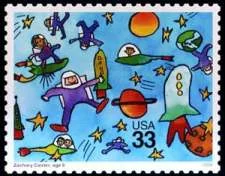
Children in Art — Part 2
Explore the original illustrated article.
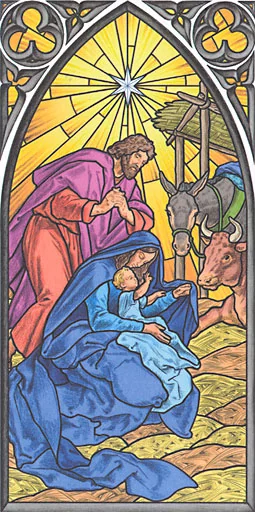
Christmas Art on Stamps — 2007
Explore the original illustrated article.
More from the original archive
These links currently open the original website while migration continues.
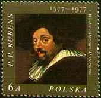
Peter Paul RubensRaphael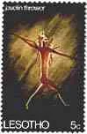
Rock Paintings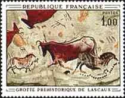
Rock Paintings II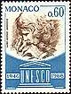
The Letter in Art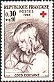
Metsu and VermeerChristmas Art 2008Christmas Art 2011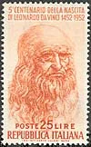
Leonardo da Vinci - 500th Death Anniversary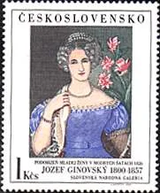
Paintings from the Prague National GalleryLetter in Paintings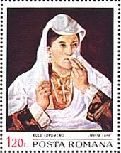
Balkan Women in Arts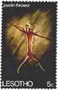
Rock Paintings on StampsThe Sixtine Chapel by Michelangelo BuonarottiEaster Paintings on Stamps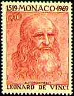
Mona Lisa Gioconda on Postal Stamps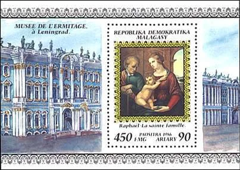
Hermitage Paintings on Foreign Stamps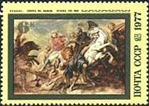
Flemish Paintings from Hermitage, St. Petersburg Portraits from the Metropolitan Museum of Arts, New York
Portraits from the Metropolitan Museum of Arts, New York French Paintings from Hermitage, St. Petersburg
French Paintings from Hermitage, St. Petersburg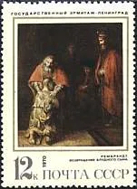
Rembrand's Paintings from Hermitage, St. Petersburg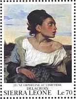
French Paintings from the Louvre Museum, Paris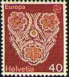
Embroidery Mail Coaches on Stamps
Mail Coaches on Stamps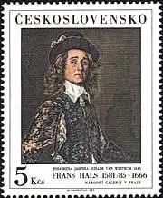
Foreign Paintings from the Prague National Gallery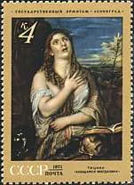
Italian Paintings from Hermitage, St. Petersburg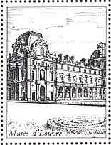
French Paintings on Stamps, from the Louvre Museum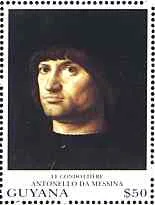
Foreign Paintings from the Louvre Museum, ParisVermeer van Delft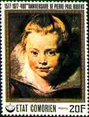
Portraits of Rubens and of His Family on Stamps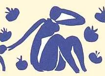
Paintings on Stamps, from the Modern Art Museum, Paris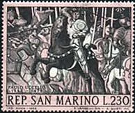
Offices Gallery, Florence. Great Italian Masters on Stamps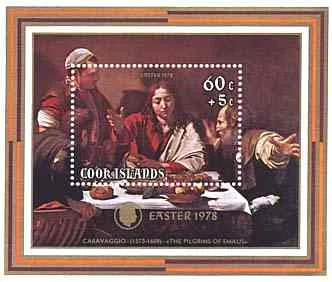
The National Gallery, London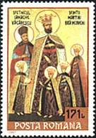
Monasteries and Saints Christmas Stamps UK 2017
Christmas Stamps UK 2017 Foreign Paintings on Stamps, from the Louvre Museum
Foreign Paintings on Stamps, from the Louvre Museum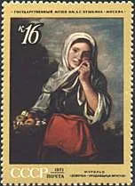
Spanish Paintings from Hermitage, St. PetersburgChristmas Art on Stamps 2008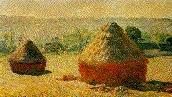
PARIS.MUSEES.ORSAY.COLLECTIONS.PAINTNGS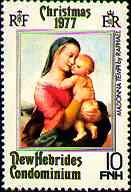
Paintings of Raphael on StampsChildren's Paintings Contests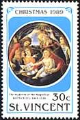
Offices Gallery, Florence. Sandro Boticelli.New Year Art Gallery Leonardo da Vinci - 500
Leonardo da Vinci - 500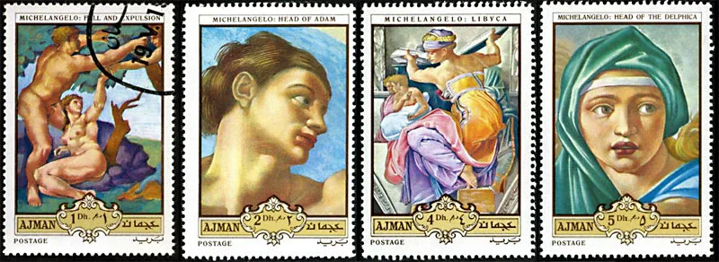
Dune Stamps - Really So Bad?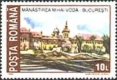
Destroyed Old BucharestGerman Paintings from Hermitage, St. PetersburgChristmas Philatelic Beauties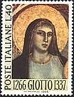
Offices Gallery, Florence. Religious Works of Art on Stamps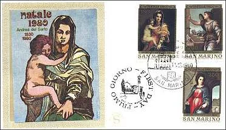
Offices Gallery, Florence. Raphael and Sarto.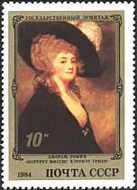
English Paintings from Hermitage, St. Petersburg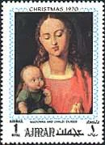
Offices Gallery, Florence. Great Foreign Masters on Stamps Great Works of El Greco from the Metropolitan Museum, NY
Great Works of El Greco from the Metropolitan Museum, NY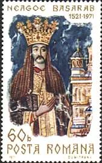
Princess Roxanda at Curtea de Arges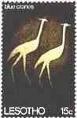
Swedish Rock Paintings on Stamps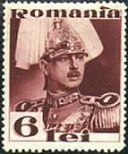
The National Museum of Art of Romania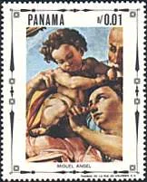
Offices Gallery, Michelangelo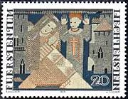
Embroideries on Stamps of Liechtenstein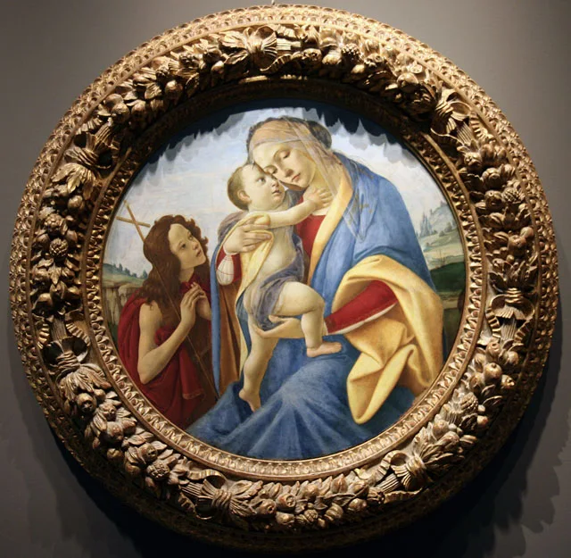
Sandro Botticelli, Virgin and Child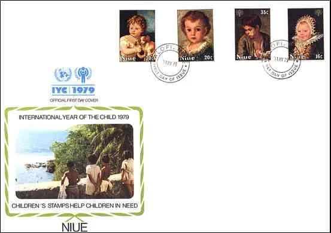
Children's Paintings on Stamps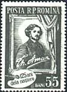
Romanain Genre Painting Rembrandt Paintings on Stamps, from the Louvre Museum
Rembrandt Paintings on Stamps, from the Louvre Museum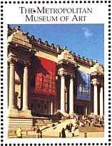
Diego Velazquez - Portrait of Juan de Pareja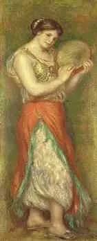
Auguste Renoir on StampsSt. Mark Cathedral, VeniceLandscape Paintings on StampsSt. Mark Cathedral, Views of VeniceLove in Arts - GoetheDecember - poetry and StampsNudes Paintings of Renoir on StampsDamaged Paintings from Romanian Museums, on StampsRenoir on Stamps: 90th Death AnniversaryAPWP - ReasonsHermitage Paintings CollectionOffices Gallery, Florence. General PresentationBest Portraits of da Vinci and VermeerChristmas Art on Stamps 2011WEB Sites Competition 2000Tips for Webmasters Diego VelasquezHiroshige - A 200th Anniversary Tribute on StampsFlemish Paintings from Hermitage, St. Petersburg. Biographical Data.PASIC WEB AWARDS
Diego VelasquezHiroshige - A 200th Anniversary Tribute on StampsFlemish Paintings from Hermitage, St. Petersburg. Biographical Data.PASIC WEB AWARDS APWP - Statuts
APWP - Statuts APWP - StatutesLiberty Leading the People — Eugène DelacroixSistine Madonna — Awarded StampsChristmas Art — Cleveland Museum
APWP - StatutesLiberty Leading the People — Eugène DelacroixSistine Madonna — Awarded StampsChristmas Art — Cleveland Museum